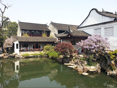

More Website Templates @ cssmoban.com - February 10, 2014!
详情介绍

更多风景
网师园为苏州四大名园之一，是苏州园林中极具艺术特色和文化价值的代表作品。
网师园始建于宋淳熙初年(公元1174年)始称“渔隐”，几经沧桑变更，至清乾隆年间(公元1765年前后)，定名为“网师园”，并形成现状布局。至今几易其主，围主多为文人雅士，且各有诗文碑刻遗于园内，历经修葺整理，最终形成了这一古典园林中的精品杰作。网师园为典型的宅园合一的私家园林。住宅部分共三进，自大门至轿厅、万卷堂、撷秀楼，沿中轴线依次展开，主厅“万卷堂”屋宇高敞，装饰雅致。 全园布局外形整齐均衡，内部又因景划区，境界各异。园中部山水景物区，突出以水为中心的主题。水面聚而不分，池西北石板曲桥，低矮贴水，东南引静桥微微拱露。环池一周叠筑黄石假山高下参差，曲折多变，使池面有水广波延和源头不尽之意。 园内建筑以造型秀丽，精致小巧见长，尤其是池周的亭阁，有小、低、透的特点，内部家具装饰也精美多致，网师园意谓“渔父钓叟之园”，园内的山水布置和景点题名蕴含着浓郁的隐逸气息。全园面积仅8亩多，做到了感觉宽绰而不显局促，主题突出，布局紧凑，小巧玲珑，清秀典雅，成功地运用比例陪称关系和对比手法，获得较好的艺术效果，是苏州中型古典园林的代表作品。更多风景